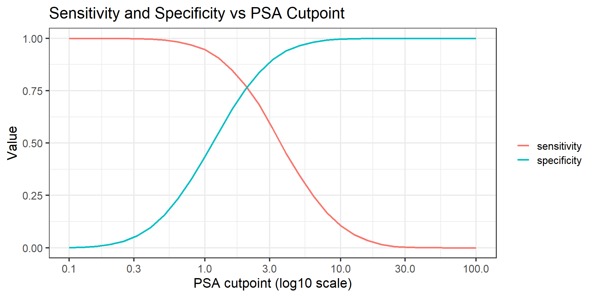
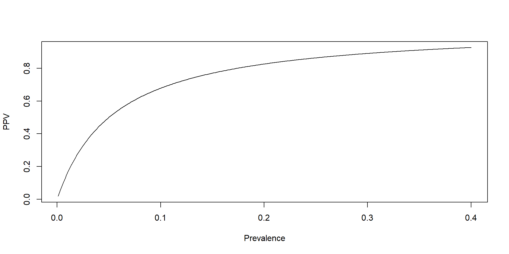

Test
Disease Test + Test −
Disease + 80 20
Disease − 100 800Diagnostic and Screening Tests
Validity, Predictive Value, and Reliability
Philip White
Learning goals
By the end of this lecture, you should be able to:
- Define validity and reliability of diagnostic and screening tests
- Compute and interpret sensitivity and specificity
- Understand how cutpoints affect test performance
- Explain positive and negative predictive value
- Compare sequential and simultaneous testing
- Quantify inter-observer reliability using percent agreement and kappa
Big picture: why diagnostic tests are hard
- Many biologic measurements overlap between diseased and non-diseased people
- Tests rarely cleanly separate populations
- Every test involves trade-offs
- There is no perfect test—only tests that are more or less useful for a purpose.
Dichotomous test results
A screening test classifies individuals as:
Positive
Negative
We compare test results to a gold standard (i.e., a nearly ideal test that yields the truth).
2×2 table for a diagnostic test
| Test + | Test − | |
|---|---|---|
| Disease + | TP | FN |
| Disease − | FP | TN |
- Ways to look at diagnostic performance
- Sensitivity and Specificity (Validity): Given disease status (positive or negative), how accurate is the diagnostic?
- Predictive Value: Given a test result (positive or negative), how accurate is the diagnostic?
- If we repeat a test on the same person, how reliable is the test.
- Which of these sounds more like how a clinician thinks?
- Which sounds more like how a test developer thinks?
Test Validity and Predictive Value
- Which of these sounds more like how a clinician thinks?
- Predictive value
- Which sounds more like how a test developer thinks?
- Sensitivity and specificity
Sensitivity and specificity
Sensitivity: probability test is positive given disease
\[\text{Sensitivity} = \frac{TP}{TP + FN}\]
Specificity: probability test is negative given no disease
\[\text{Specificity} = \frac{TN}{TN + FP}\]
Sensitivity and specificity: by hand
- Suppose we apply a screening test to a population and compare results to a gold standard.
2×2 table
| Disease status \ Test result | Test + | Test − | Total |
|---|---|---|---|
| Disease + | TP = 80 | FN = 20 | 100 |
| Disease − | FP = 100 | TN = 800 | 900 |
| Total | 180 | 820 | 1,000 |
- Which row am I conditioning on for sensitivity?
- Which row am I conditioning on for specificity?
Calculations
\(\text{Sensitivity} = \frac{80}{80 + 20}= 0.80\)
\(\text{Specificity} = \frac{800}{800 + 100}= 0.89\)
Sensitivity and specificity: using R (part I)
Now compute the same quantities directly from a 2×2 table.
Sensitivity and specificity: using R (Part II)
Now compute the same quantities directly from a 2×2 table.
Test
Disease Test + Test −
Disease + 80 20
Disease − 100 800# Extract counts from the table
TP <- test_table["Disease +", "Test +"]
FN <- test_table["Disease +", "Test −"]
FP <- test_table["Disease −", "Test +"]
TN <- test_table["Disease −", "Test −"]
# Compute sensitivity and specificity
sensitivity <- TP / (TP + FN)
specificity <- TN / (TN + FP)
sensitivity[1] 0.8[1] 0.8888889- Interpretation:
- Sensitivity: 80% of people with disease test positive
- Specificity: 89% of people without disease test negative
Continuous tests and cutpoints
- Most tests produce continuous values (e.g., blood pressure or biomarker concentration)
- A cutoff defines positive vs negative
Trade-off:
- Lower cutoff → higher sensitivity, lower specificity
- Higher cutoff → lower sensitivity, higher specificity
Biologic variation in populations
- Some characteristics are bimodal (easy separation)
- Most characteristics are unimodal (substantial overlap)
Implication:
- Choosing a cutoff always creates false positives and false negatives.
Example: An inexpensive screening for prostate cancer
- Prostate specific antigen (PSA) for early detection of prostate cancer: longitudinal study (https://doi.org/10.1136/bmj.b3537)
- What threshold would you use to separate cases and controls?
- Pick a cutoff. Defend it.

R example: sensitivity–specificity tradeoff code
library(dplyr)
library(tidyr)
library(ggplot2)
set.seed(1)
# Simulate PSA marker values in 70+ population
marker_disease <- 10^(rnorm(5000, log10(3.64), 0.34))
marker_nodisease <- 10^(rnorm(70000, log10(1.14), 0.35))
cutpoints <- 10^seq(-1, 2, by = 0.1)
calc_metrics <- function(cut) {
TP <- sum(marker_disease >= cut)
FN <- sum(marker_disease < cut)
FP <- sum(marker_nodisease >= cut)
TN <- sum(marker_nodisease < cut)
tibble(
cutpoint = cut,
sensitivity = TP / (TP + FN),
specificity = TN / (TN + FP)
)
}
metrics <- bind_rows(lapply(cutpoints, calc_metrics)) %>%
pivot_longer(
cols = c(sensitivity, specificity),
names_to = "metric",
values_to = "value"
)
ggplot(metrics, aes(x = cutpoint, y = value, color = metric)) +
geom_line(linewidth = 1) +
scale_x_log10(
breaks = c(0.1, 0.3, 1, 3, 10, 30, 100),
labels = scales::label_number()
) +
scale_y_continuous(limits = c(0, 1)) +
theme_bw(base_size = 16) +
labs(
x = "PSA cutpoint",
y = "Validity Measure",
color = "",
title = "Sensitivity and Specificity vs PSA Cutpoint"
)R example: sensitivity–specificity tradeoff plot

- If I move the cutoff to the right:
- Which error am I trying to reduce?
- Who benefits?
- Who is harmed?
Predictive value: a different question
Clinical question:
- Given a positive test, what is the probability the patient has the disease?
- Given a negative test, what is the probability the patient doesn’t have the disease?
Positive predictive value (PPV)
\[PPV = \frac{TP}{TP + FP}\]
Negative predictive value (NPV)
\[NPV = \frac{TN}{TN + FN}\]
R example: predictive values
Test
Disease Test + Test −
Disease + 80 20
Disease − 100 800[1] 0.4444444[1] 0.9756098- Why? Is this a bad test?
Predictive value depends on prevalence
Sensitivity and specificity are test properties
Predictive value depends on disease prevalence
Low prevalence → many false positives
Positive predictive value (PPV): where prevalence enters
Recall the definition: \(PPV = P(\text{Disease+} \mid \text{Test} +)\)
Using Bayes’ rule: \(PPV= \frac{P(\text{Test} + \mid \text{Disease}+) \, P(\text{Disease}+)}{P(\text{Test} +)}\)
Substitute test properties:
- \(P(\text{Test} + \mid \text{Disease}+) = \text{Sensitivity}\)
- \(P(\text{Disease}+) = \text{Prevalence}\)
Expand the denominator (law of total probability):
\[\begin{align*} P(\text{Test} +)&= P(\text{Test} + |\text{Disease}+) P(\text{Disease}+) + P(\text{Test} + |\text{Disease}-)P(\text{Disease}-) \\ & = \text{Sensitivity} \cdot \text{Prevalence}+ (1 - \text{Specificity}) \cdot (1 - \text{Prevalence}) \end{align*}\]
So we obtain:
\[PPV= \frac{\text{Sensitivity} \cdot \text{Prevalence}}{\text{Sensitivity} \cdot \text{Prevalence}+ (1 - \text{Specificity}) \cdot (1 - \text{Prevalence})}\]
- Key idea: Prevalence affects PPV by changing how many false positives compete with true positives.
R example: PPV vs prevalence

Negative predictive value (NPV): where prevalence enters
Recall the definition:
\(NPV = P(\text{Disease−} \mid \text{Test} −)\)Using Bayes’ rule:
\(NPV = \frac{P(\text{Test} − \mid \text{Disease−}) \, P(\text{Disease−})}{P(\text{Test} −)}\)Substitute test properties:
- \(P(\text{Test} − \mid \text{Disease−}) = \text{Specificity}\)
- \(P(\text{Disease−}) = 1 - \text{Prevalence}\)
Expand the denominator (law of total probability):
\[\begin{align*} P(\text{Test} −) &= P(\text{Test} − \mid \text{Disease−}) P(\text{Disease−}) + P(\text{Test} − \mid \text{Disease+}) P(\text{Disease+}) \\ &= \text{Specificity} \cdot (1 - \text{Prevalence})+ (1 - \text{Sensitivity}) \cdot \text{Prevalence} \end{align*}\]
So we obtain:
\[NPV = \frac{\text{Specificity} \cdot (1 - \text{Prevalence})} {\text{Specificity} \cdot (1 - \text{Prevalence}) + (1 - \text{Sensitivity}) \cdot \text{Prevalence}}\]
- Key idea: When prevalence is low, most negative tests are true negatives.
Using multiple tests: why do this at all?
Sometimes a single test is not enough because:
- The first test is cheap but imperfect
- A second test is expensive or invasive
- False positives and false negatives have different costs
Two common strategies:
- Sequential testing: “The Conservative Skeptic” (Trust but verify).
- Simultaneous testing: “The Wide Net” (Leave no stone unturned).
- The strategy determines how sensitivity and specificity change.
Sequential testing (two-stage testing)
Definition:
- Test 1 is applied to everyone
- Test 2 is applied only if Test 1 is positive
- Final result is positive only if both tests are positive
Common use:
- Screening programs
- Expensive or invasive confirmatory tests
Intuition:
- Sequential testing is designed to rule out false positives.
Sequential testing: effect on test performance
Let:
- \(\text{Sensitivity}_1\), \(\text{Specificity}_1\) = Test 1
- \(\text{Sensitivity}_2\), \(\text{Specificity}_2\) = Test 2
Then:
Net sensitivity: \[\text{Sensitivity}_{net} = \text{Sensitivity}_1 \times \text{Sensitivity}_2\]
Net specificity:
\[\text{Specificity}_{net} = \text{Specificity}_1 + (1 - \text{Specificity}_1)\times \text{Specificity}_2\]
Key trade-off:
- Sensitivity ↓
- Specificity ↑
- Sequential testing sacrifices sensitivity to gain specificity.
Simultaneous testing
Definition:
- Multiple tests applied at the same time
- Final result is positive if any test is positive
- Negative only if all tests are negative
Common use:
- Diagnostic workups
- Acute care settings
Intuition:
- Simultaneous testing is designed to avoid missing cases.
Simultaneous testing: effect on test performance
Let:
- \(\text{Sensitivity}_1\), \(\text{Specificity}_1\) = Test 1
- \(\text{Sensitivity}_2\), \(\text{Specificity}_2\) = Test 2
Then:
Net sensitivity: \[\text{Sensitivity}_{net} = \text{Sensitivity}_1 + \text{Sensitivity}_2 - \text{Sensitivity}_1\times \text{Sensitivity}_2\]
Net specificity: \[\text{Specificity}_{net} = \text{Specificity}_1 \times \text{Specificity}_2\]
Key trade-off: - Sensitivity ↑ - Specificity ↓
- Simultaneous testing sacrifices specificity to gain sensitivity.
Comparing the two strategies
| Strategy | Sensitivity | Specificity | Typical goal |
|---|---|---|---|
| Sequential | ↓ | ↑ | Reduce false positives |
| Simultaneous | ↑ | ↓ | Reduce false negatives |
Key lesson:
- There is no “better” strategy — only strategies aligned with goals.
Discussion: choosing a strategy
Discuss in small groups:
- Which mistake is worse here?
- Which strategy would you prefer for:
- cancer screening?
- confirmatory diagnosis?
- Which error is more costly:
- false positives?
- false negatives?
- How does disease prevalence affect this choice?
- Testing strategy is a policy decision, not just a statistical one.
R example: sequential vs simultaneous testing
[1] 0.63[1] 0.98[1] 0.97[1] 0.72Reliability: repeatability of tests
Even a test with excellent sensitivity and specificity is of little value if it is not reproducible.
Reliability asks:
- If we repeat the test, do we get the same result?
Common sources of variation
- Within-subject variation
- True biologic variability over time
- Example: blood pressure, glucose
- True biologic variability over time
- Within-observer variation
- Same observer reads the same test differently
- Between-observer variation
- Different observers interpret the same test differently
Percent agreement
Definition: - The proportion of observations on which two observers agree
\[\text{Percent agreement} = \frac{\text{Number of agreements}}{\text{Total observations}}\]
Strength: Simple and intuitive
Limitation: Does not account for agreement expected by chance
- If almost everyone is negative, what do you expect percent agreement to look like?
Kappa statistic
Adjusts agreement for chance, so measures agreement beyond chance
\[\kappa = \frac{\text{Observed agreement} - \text{Expected agreement by chance}} {1 - \text{Expected agreement by chance}}\]
Interpretation (one rule of thumb):
- \(<\) 0.4: poor
- 0.4–0.75: fair to good
- \(>\) 0.75: excellent
Validity vs reliability
- A test can be reliable but not valid
- A test can be valid on average but unreliable for individuals
Goal:
- Tests that are both valid and reliable.
Wrap-up
- What is the most misleading single number we discussed today?
- Diagnostic testing involves unavoidable trade-offs
- Cut-points matter
- Predictive value depends on context
- Reliability is as important as validity
- Next up: Causal Inference